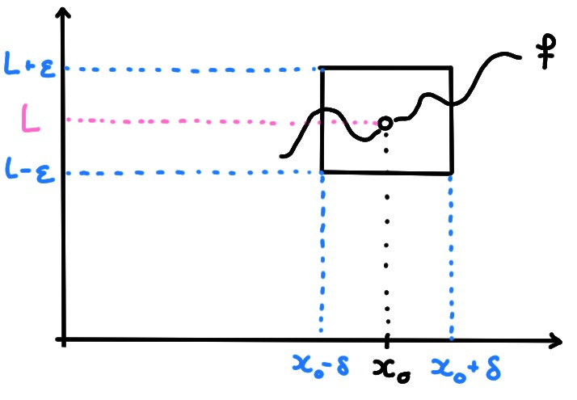
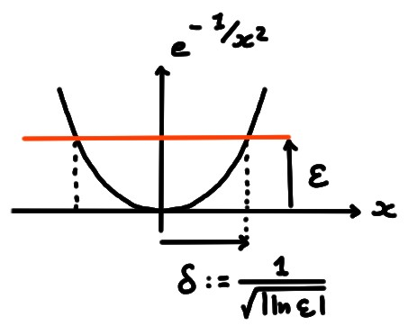
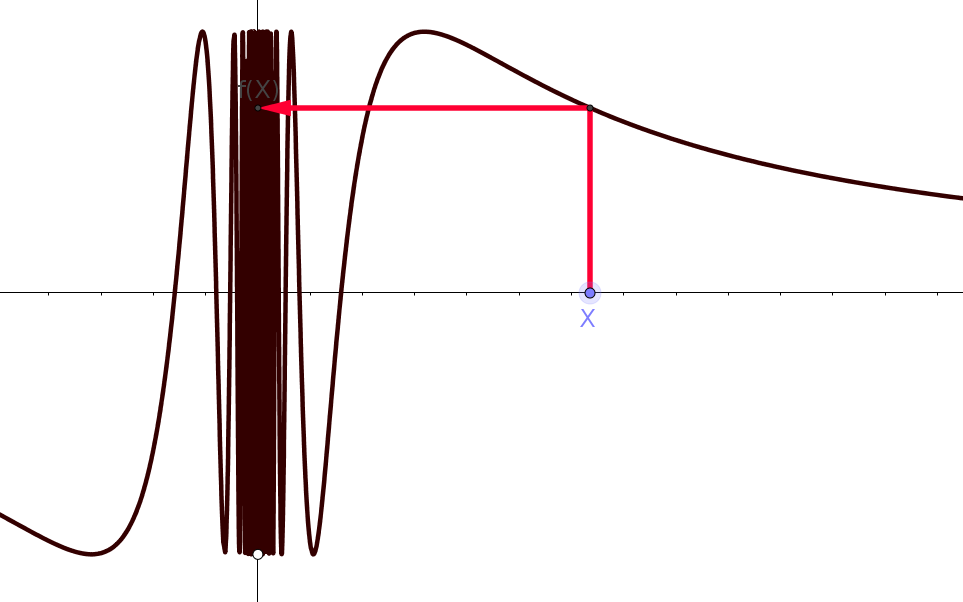

Un premier pas, dans l'étude d'une fonction, est d'étudier comment se comportent
ses valeurs
proche d'un point \(x_0\). Le point \(x_0\) pourra être un point intérieur du
domaine de la fonction, ou alors sur son bord.
Être ''proche'' de \(x_0\) signifiera ''proche mais différent de \(x_0\)''.
Et ''proche de \(x_0\)'', signifiera
arbitrairement proche.
Il s'agira donc de développer un langage dans lequel on pourra décrire
rigoureusement ce que font les valeurs du réel \(f(x)\) lorsque \(x\) est
arbitrairement proche (et différent) de \(x_0\).
Dans cette analyse,
on n'essaiera pas de classer tous les comportements possibles de \(f(x)\). Plutôt,
on se concentrera sur certains comportements classiques
observés dans nombre de fonctions rencontrées en analyse.
En particulier,
on donnera un sens aux termes suivants:
\(f(x)\) tend vers \(L\in \mathbb{R}\) lorsque \(x\) tend vers \(x_0\)
\(f(x)\) tend vers l'infini lorsque \(x\) tend vers \(x_0\)
Notion de voisinage
Pour parler des réels \(x\) proches de \(x_0\), on utilisera la notion
de voisinage.
Soit \(x_0\in \mathbb{R}\).
L'ensemble \(V=\mathopen]x_0-\alpha,x_0\mathopen [\cup \mathopen]x_0,
x_0+\alpha\mathopen [\),
où \(\alpha\gt 0\), est appelé
voisinage épointé de \(x_0\).
Une fonction \(f\)
est définie au voisinage de \(x_0\) si il existe un
voisinage épointé de \(x_0\), \(V\), tel que \(f(x)\) est définie pour tout
\(x\in V\).
Aucune des
fonctions
\[
f(x)=\frac1{x}\,\qquad
f(x)=\ln|x|\,\qquad
f(x)=\sin(\tfrac{1}{x^2+x})
\]
n'est définie
en \(0\), mais toutes sont bien définies dans un voisinage épointé de \(0\).
Limite en un point
Un premier cas naturel à considérer est celui dans lequel
les valeurs de \(f(x)\) tendent à se rapprocher d'un même nombre, que l'on
notera généralement \(L\), à mesure que
\(x\) se rapproche de \(x_0\). C'est, dans une certaine mesure, la notion
centrale de l'analyse.
Soit \(x_0\in \mathbb{R}\) et \(f\) une fonction définie dans un voisinage épointé
de \(x_0\).
On dit que \(f\) tend vers \(L\in \mathbb{R}\) lorsque \(x\) tend vers \(x_0\)
si pour tout \(\varepsilon\gt 0\) il existe
\(\delta\gt 0\) tel que \(|f(x)-L|\leqslant \varepsilon\) dès que \(0\lt
|x-x_0|\leqslant \delta\).
Le réel \(L\) sera appelé la limite, et on utilisera la notation:
\[\boxed{\lim_{x\to x_0}f(x)=L\,.}\]
En général, pour un \(\varepsilon\gt 0\) fixé, le \(\delta\gt 0\) est un nombre qui
doit être pris
en fonction de \(\varepsilon\).

Considérons
\[
f(x):=
\begin{cases}
\frac{x-1}{2}&\text{ si }x\neq 2\,,\\
\frac{\pi^2}{9}&\text{ si }x=2\,,
\end{cases}
\]
et étudions-la dans un voisinage épointé de \(x_0=2\). Cela signifie que l'on ne
s'intéresse qu'aux valeurs de \(f(x)\) pour \(x\) proche de \(2\), différent de
\(2\); dans ce cas, \(f(x)\) est \(\frac{x-1}{2}\). On voit aussi que lorsque
\(x\) se rapproche de \(2\), ce quotient semble se rapprocher de \(\frac12\).
Montrons-le rigoureusement, en fixant un \(\varepsilon>0\) et en cherchant une
contrainte sur \(x\neq 2\) qui garantisse que
\[\Bigl|\frac{x-1}{2}-\frac12\Bigr|\leqslant \varepsilon\,.\]
Cette dernière étant équivalente à
\[ |x-2|\leqslant 2\varepsilon\,, \]
On peut donc prendre \(\delta:= 2\varepsilon\).
Il est important de remarquer que l'étude de
\(\lim_{x\to x_0}f(x)\) est indépendante de la valeur de \(f(x_0)\). En fait,
\(f\) n'a même pas besoin d'être définie en \(x_0\)!
Considérons
\[ f(x):=e^{-\frac{1}{x^2}}\,, \]
qui n'est pas définie en \(x=0\), mais partout ailleurs. Montrons que
\[
\lim_{x\to 0}f(x)=0\,.
\]
Fixons donc un \(\varepsilon\gt 0\), et montrons que l'on peut trouver un
\(\delta\gt 0\) tel que \(|e^{-\frac{1}{x^2}}|\leqslant \varepsilon\) dès que \(0\lt
|x|\leqslant \delta\).
Pour cela, on remarque d'abord que, l'exponentielle étant toujours strictement
positive,
\(|e^{-\frac{1}{x^2}}|=e^{-\frac{1}{x^2}}\). Or on peut résoudre l'inégalité
\(e^{-\frac{1}{x^2}}\leqslant \varepsilon\) explicitement.
D'abord, en prenant le \(\ln(\cdot)\) (qui est une fonction croissante)
des deux côtés de l'inégalité, et en changeant le sens de l'inégalité:
\[
\frac{1}{x^2}\geqslant -\ln(\varepsilon)\,.
\]
Cette dernière est toujours vraie si \(\varepsilon\geqslant 1\); dans ce cas on peut
donc prendre n'importe quel \(\delta\), par exemple \(\delta=2\).
Ensuite, considérons le
cas où \(0\lt \varepsilon\lt 1\). Dans ce cas, \(\ln(\varepsilon)\lt 0\), et
donc
\(-\ln(\varepsilon)=|\ln(\varepsilon)|\). On a donc montré que
\[
|f(x)|\leqslant \varepsilon\quad \text{ si et seulement si }\quad
|x|\leqslant \frac{1}{\sqrt{|\ln(\varepsilon)|}}\,.
\]
On peut donc conclure en prenant
\[ \delta:=\frac{1}{\sqrt{|\ln(\varepsilon)|}}\,.\]

On voit bien, par ce calcul, que plus \(\varepsilon>0\) est choisi petit, plus
\(x\) doit être pris proche de \(0\) pour que \(|f(x)|\leqslant \varepsilon\).
Premières propriétés de la limite
Cela peut sembler évident, mais il est important de montrer qu'une
fonction ne peut tendre que vers une limite:
Supposons, par l'absurde, que
\(f\) tende vers deux limites différentes, \(L_1\) et \(L_2\).
Sans perte de généralité, supposons que \(L_1\lt L_2\).
Soit \(\varepsilon:=\frac{L_2-L_1}{3}\),
qui est strictement positif par hypothèse. Aussi,
\(L_2-L_1>\varepsilon\).
Par définition de \(L_1\), il existe \(\delta_1>0\) tel que
\(|f(x)-L_1|\leqslant \varepsilon\) dès que \(0\lt |x-x_0|\leqslant \delta_1\).
Par définition de \(L_2\), il existe \(\delta_2>0\) tel que
\(|f(x)-L_2|\leqslant \varepsilon\) dès que \(0\lt |x-x_0|\leqslant \delta_2\).
Définissons maintenant \(\delta:=\min\{\delta_1,\delta_2\}\).
Considérons alors un \(x\) tel que \(0\lt|x-x_0|\leqslant \delta\).
Comme \(\delta\leqslant \delta_1\), on a que \(|f(x)-L_1|\leqslant \varepsilon\).
Et, comme \(\delta\leqslant \delta_2\), on a que \(|f(x)-L_2|\leqslant \varepsilon\).
On a donc, par l'inégalité triangulaire, que
\[\begin{aligned}
|L_1-L_2|&=|(L_1-f(x))-(L_2-f(x))|\\
&\leqslant |L_1-f(x)|+|L_2-f(x)|\leqslant 2\varepsilon=\frac{2}{3}|L_1-L_3|\,,
\end{aligned}\]
ce qui est absurde.
Le résultat suivant offre une charactérisation alternative de la limite en un
point, en établissant un lien avec la notion de limite introduite
précédemment pour le suites de réels.
(Critère de convergence via les suites)
Soit \(f\) définie au voisinage de \(x_0\).
Alors \(\lim_{x\to x_0}f(x)=L\) si et seulement si pour toute suite
\((a_n)_n\) satisfaisant \(a_n\neq x_0\) pour tout \(n\) et \(a_n\to x_0\)
lorsque \(n\to \infty\), on a que \(f(a_n)\to L\) lorsque \(n\to \infty\).
\(\Rightarrow:\) Supposons que \(\lim_{x\to x_0}f(x)=L\). Prenons une suite
\((a_n)_n\) satisfaisant \(a_n\neq x_0\) pour tout \(n\), et \(a_n\to x_0\).
Fixons \(\varepsilon\gt
0\). Par la définition de limite, il existe \(\delta\gt 0\) tel que
\(|f(x)-L|\leqslant \varepsilon\) dès que \(0\lt |x-x_0|\leqslant \delta\).
Puisque \(a_n\to x_0\), considérons un entier \(N\) tel que \(|a_n-x_0|\leqslant
\delta\) pour tout \(n\geqslant N\). Mais donc, lorsque \(n\geqslant N\), \(a_n\) est à
distance au plus \(\delta\) de \(x_0\). Ceci implique donc que \(|f(a_n)-L|\leqslant
\varepsilon\). Ceci montre que \(f(a_n)\to L\).
\(\Leftarrow:\) Supposons maintenant que \(f(a_n)\to L\) pour toute suite
\(a_n\to x_0\). Par l'absurde, supposons que \(f(x)\) ne tend pas vers \(L\)
lorsque \(x\) tend vers \(x_0\). Cela signifie qu'il existe un \(\varepsilon>0\)
pour lequel il n'existe aucun \(\delta\gt 0\) tel que \(|f(x)-L|\leqslant \varepsilon\)
dès que \(0\lt |x-x_0|\leqslant \delta\).
Ceci implique qu'il existe une suite \((a_n')_n\), \(a_n'\to x_0\), telle que
\(|f(a_n')-L|\gt \varepsilon_*\) pour tout \(n\), une contradiction.
Ce critère est en général utilisé pour montrer qu'une fonction \(f\)
n'a pas de limite lorsque \(x\to x_0\), en trouvant deux suites \(x_n\to
x_0\), \(y_n\to x_0\) telles que \(f(x_n)\) et \(f(y_n)\) possèdent des limites
lorsque \(n\to\infty\), mais différentes:
\[
\lim_{n\to \infty}f(x_n)
\neq
\lim_{n\to \infty}f(y_n)
\]
Considérons \(f(x)=\sin(\frac1x)\), dans un voisinage épointé de \(x=0\).
Considérons deux suites qui tendent vers zéro.
Pour la première, prenons
\(x_n=\frac{1}{\frac{\pi}{2}+2\pi n}\), pour laquelle
\[ f(x_n)=\sin(\tfrac{1}{x_n})=\sin(\tfrac{\pi}{2}+2\pi n)=1\qquad \forall n
\]
Pour la première, prenons
\(y_n=\frac{1}{\frac{3\pi}{2}+2\pi n}\), pour laquelle
\[ f(y_n)=\sin(\tfrac{1}{y_n})=\sin(\tfrac{3\pi}{2}+2\pi n)=-1\qquad \forall n
\]
Puisque \(x_n\to 0\) et \(y_n\to 0\) mais
\(\lim_{n\to \infty} f(x_n)\neq \lim_{n\to \infty} f(y_n)\), ceci implique que
la limite \(\lim_{x\to 0}f(x)\) n'existe pas.

Soit \(f\) une fonction définie dans un voisinage épointé de \(x_0\). Alors
\(\displaystyle \lim_{x\to x_0}f(x)=L\) si et seulement si
[ ] \(f(x_0)=L\)
[ ] il existe \(\varepsilon>0\) tel que
\(f(x)=L\) dès que \(0[ ] \(f(x)\) est différent de \(L\) pour tout \(x\) suffisamment proche
de \(x_0\)
[ ] il existe \(\varepsilon>0\) tel que pour tout \(\delta>0\),
\(0[ ] il existe \(\delta>0\) tel que pour tout \(\varepsilon>0\),
\(0[ ] pour tout \(\varepsilon>0\) il existe \(\delta>0\) tel que
\(0[ ] pour tout \(\varepsilon>0\) il existe \(\delta>0\) tel que
\(0[ ] il existe une suite \(x_n\to x_0\)
telle que \(\lim_{n\to \infty}f(x_n)=L\)